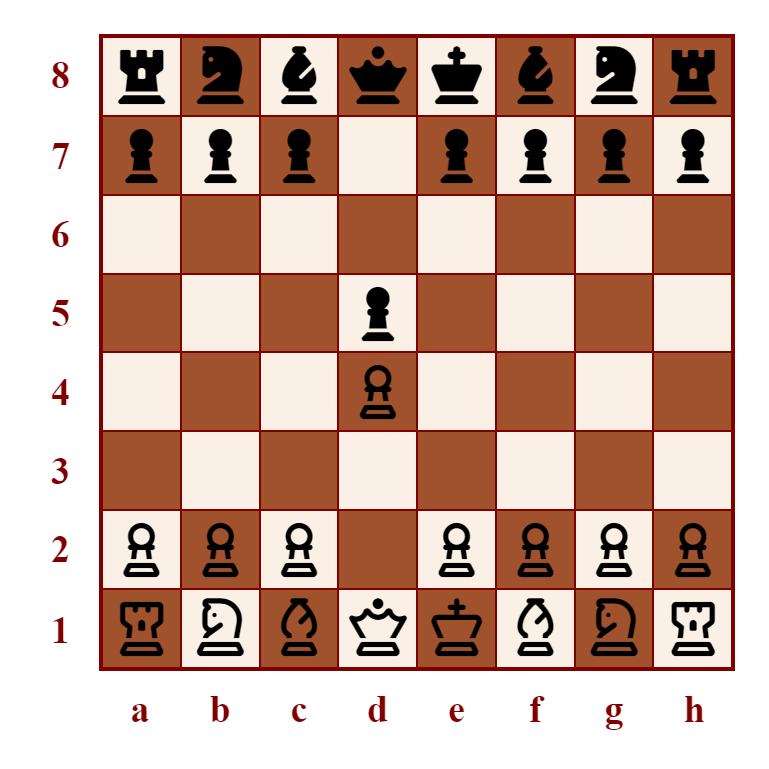
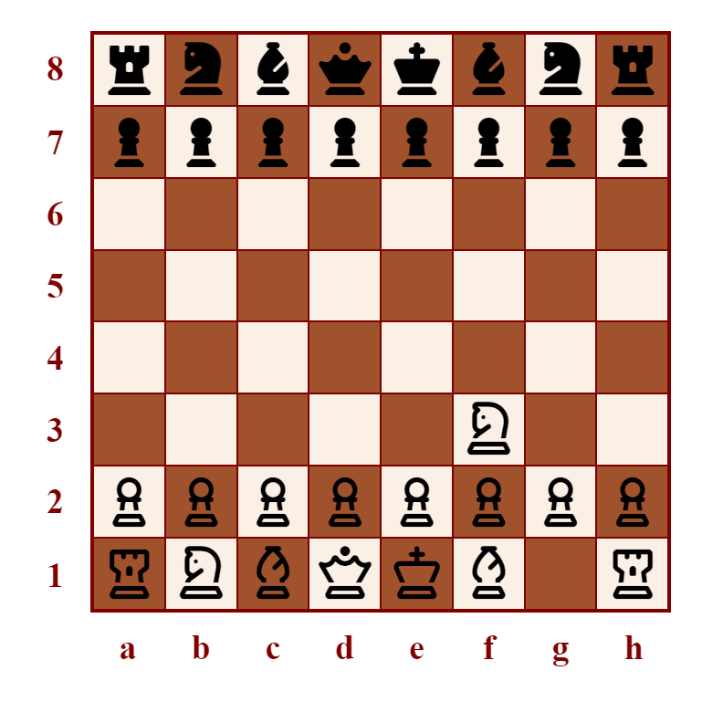

Chess Openings
The first few moves of the game are important. A strong opening can set you up well for the rest of the game. A weak opening can put you at an immediate disadvantage.
Closed Game
1. d4 d5
When white's first move is d4 and black responds with d5, this is called a Closed Game. In other words, white moves the pawn in front of their queen forwards two spaces and black mirrors it.
This is commonly regarded as a solid opening for both players. There is an attempt to control the center, by direct occupation with the pawn. The queen and c-file bishop have the possibility of development (that is, of moving from their starting positions). Also, the pawn has some support from the queen.
In general, queen's pawn openings tend to create complex, slowed-down games with careful manoeuvring and the seeking of small positional advantages that build up to victory.
Queen's Gambit
1. d4 d5 2. c4

A popular follow-up to the Closed Game is for white to turn it into a Queen's Gambit by moving their c-file pawn forwards two spaces, threatening black's d5 center pawn from the queenside (which is files a through d, across all 8 ranks).
The main three options for black's response are Queen's Gambit Accepted, Queen's Gambit Declined, and the Slav Defense. Accepting the gambit means taking white's pawn with their own (2. c4 dxc4). Declining the gambit or playing the Slav Defense mean instead backing up the d5 pawn by moving a pawn in an adjacent file forwards one square (2...e6 or 2...c6, respectively).
A minor advantage of c6 over e6 is that it blocks white from putting black's king in check with their next move by playing 3. Qa4+, although this attack can be easily thwarted on black's move with 3...c6, or Nc6, or Bd7 threatening white's queen.
Zukertort Opening
1. Nf3
Although pawn openings are far more common, the knights can also legally be granted the first move. The most popular of these options is the Zukertort Opening, where the kingside knight moves forward two squares and inward one square.
This offers some early control of the center, as the knight's influence covers the squares d4 and e5. The first effect of this is that black loses the option of playing 1...e5, since it would be immediately taken by white's knight.
Black often responds with 1...d5. If white then plays 2. c4, that is known as the Réti Opening. It threatens black's center pawn and clears a path for development of white's queen.